При управлении онлайновыми рекламными кампаниями при подключении новых
источников (объявлений, баннеров, SMM и т.п.) часто приходится решать проблему:
С одной стороны, разумно подождать, пока источник не выдаст побольше
переходов, посмотреть на конверсии, и тогда принимать решение, оставить его в рекламной
кампании или отключить.
Но если долго ждать, тогда рекламный бюджет будет зря расходоваться на
неэффективные источники.
С другой стороны, если сократить ожидание, можно случайно отключить источник,
который на самом деле конверсионный,
и наоборот, оставить неэффективный источник, случайно показавший
высокую конверсию.
Очевидно, нужно найти некий баланс: с одной стороны, дать
источникам достаточно времени, чтобы проявить себя, с другой стороны вовремя отключать неэффективных.
Поиском такого баланса мы и займемся. Для этого будем тестировать
эффективность стратегий управления источниками на модели, имитирующей
поступление трафика и конверсии на реальном сайте.
Модель
Мы будем моделировать рекламную кампанию, которая длится $T$ дней.
Средний объем трафика, приходящего на сайт – $V$ визитов в день,
этот трафик распределяется между $N$ источниками. У каждого источника есть вес,
$w_{i,t}$ обозначающий долю всего трафика, которая приходится на источник
в день $t$:
$$\sum_{i=1}^N w_{i,t} = 1, \; t \in 1 \dots T$$
На старте у источников одинаковые равные веса $w_{i, 1}=\frac{1}{N}$.
Затем каждый день стратегия меняет вес источников на своё усмотрение.
Вес $w_{i,t}$ может быть нулевым, это означает, что источник отключен.
Каждый источник в соответствии со своим весом генерирует количество визитов
с матожиданием $\lambda_{i,t}$ (интенсивность визитов):
$$\lambda_{i,t} = w_{i,t} V$$
Но это среднее количество визитов, а реальное их количество
моделируется как
процесс Пуассона
с интенсивностью $\lambda_{i,t}$. Тогда количество визитов $v_{i,t}$, которое выдаст источник в каждый конкретный день
$t$, сэмплируется из распределения Пуассона:
$$v_{i,t} \sim \mathrm{Pois}(\lambda_{i,t})$$
Таким образом моделируется ситуация из реальной жизни: далеко
не всегда можно управлять точным количеством переходов на сайт из источника.
Каждый источник имеет латентную конверсионность $\theta_i$ (т.е. это истинная конверсионность источника,
которая проявится на большом количестве трафика).
Распределение
конверсионностей источников смоделируем логнормальным распределением:
$$\theta_i \sim \exp\left(\mathcal{N}(\mu, \sigma^2)\right)$$
Для наших экспериментов примем, что медианная конверсионность источников 1%:
$\mu = \ln(0.01)$ и $\sigma = 0.5$. Получится распределение,
похожее на то, что встречается на реальных сайтах:
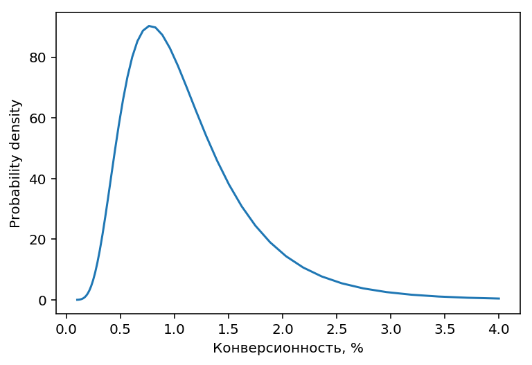
Логнормальное распределение несимметрично (длинный хвост справа), поэтому
для него матожидание (т.е. средняя конверсионность) и медиана будут немного отличаться:
$$\mathrm{E}=\exp\left(\mu + \frac{\sigma^2}{2}\right) \\
\mathrm{Median}=\exp(\mu)$$
В используемом нами распределении средняя конверсионность будет $\approx 1.13\%$
Латентная конверсионность источника $\theta_i$ недоступна стратегии,
доступна только реализация конверсионности $r_{i,t}$:
$$c_{i,t} \sim \mathrm{Bin}(v_{i,t}, \theta_i) \\
r_{i,t} = \frac{\sum_{j=1}^t c_{i,j}}{\sum_{j=1}^t v_{i,j}}$$
т.е. количество конверсий у источника в конкретный день $c_{i,t}$ сэмплируется из биномиального
распределения, а параметры биномиального распределения, в свою очередь,
тоже сэмплируются из своих распределений, описанных выше. Сэмплирование
количества визитов $v_{i,t}$ происходит каждый день, сэмплирование конверсионностей $\theta_i$
один раз перед стартом каждого эксперимента.
Принципиальная схема модели
Параметры по умолчанию
Сведём вместе все значения параметров по умолчанию:
$N=100$. В каждом эксперименте участвует 100 источников, из которых
будем отбирать лучших.
$T=90$. Рекламная кампания (т.е. один эксперимент) длится 90 дней.
$V=100$. Каждый день между источниками распределяется 100 визитов.
При таком объеме трафика на каждый источник приходится в среднем
всего один визит в день, и за всё время эксперимента произойдет в среднем
одна конверсия на источник! Очевидно, что выявление лучших источников при столь
малом объеме трафика это нетривиальная задача. Для некоторых
экспериментов будем использовать менее экстремальное значение $V=1000$
Конверсионность источников берётся из логнормального распределения
с параметрами $\mu=\ln(0.01), \sigma=0.5$, что соответствует средней
конверсионности $\approx 1.13\%$.
Результаты каждого эксперимента будут отличаться друг от друга
из за использования стохастических переменных, поэтому итоговый результат
будем рассчитывать, как среднее по 2000 повторений эксперимента.
Цель стратегий
Стратегия в конце каждого дня (момент времени $t$) смотрит на накопленные результаты работы
источников (кол-во визитов, кол-во конверсий и вычисленная на их основе конверсионность) и принимает решение, какие
веса дать источникам на следующий день, т.е. на момент времени $t+1$.
Цель стратегии – получить максимальное кол-во конверсий за время рекламной кампании,
т.е. дать максимальный вес источникам с высокой конверсионностью
и минимальный вес всем остальным. В реальной жизни ёмкость источников ограничена,
поэтому существует дополнительное условие:
$w_{i} \leq w_i^{max}$
Каким должен быть максимальный вес $w_i^{max}$? Обычно источники
с высокой конверсионностью имеют меньшую ёмкость, так как по сути являются
узкими (и часто дорогими) сегментами аудитории. Чтобы отразить это в модели,
сделаем максимальный вес источника обратно пропорциональным его конверсионности:
$$w_{i}^{max} = \frac{k}{\theta_i} $$
где $\theta_i$ это латентная конверсионность, $k$ – коэффициент, регулирующий
среднюю ёмкость источников. Примем $k$ равным матожиданию конверсионности:
$$k=\mathrm{E}(\theta)$$
Тогда источник со “средней” конверсионностью будет иметь максимальный вес, равный
единице. Источник “хуже среднего” сможет быть единственным активным
источником для сайта, а источник “лучше среднего” – не сможет. Если конверсионность
источника в 2 раза выше средней, он сможет иметь максимум 50% трафика,
если в 4 раза выше средней – 25% трафика, и т.п.
В идеале к концу эксперимента должен остаться активным только топ
лучших источников. При используемом распределении конверсионностей в идеальный топ будет
входить в 80% случаев 3 источника и в 20% случаев 4 источника.
Оценка стратегий
Эффективность стратегий оценивается по улучшению конверсионности по сравнению с baseline (0%)
и идеальным вариантом (100%).
За baseline принимается средняя конверсионность, которая будет, если вообще ничего
не делать и оставить все источники в равных долях, как они были на старте.
За идеальный вариант принимается максимальная конверсионность, которая была бы,
если с первого же дня оставить только лучшие источники и отключить все остальные.
Общее улучшение – это то, как полученные результаты соотносятся с baseline и максимумом:
$$improvement=\frac{result-baseline}{maximum-baseline} \times 100\%$$
Улучшение рассчитывается для каждого дня отдельно, затем результат усредняется.
Если не получилось ничего улучшить по сравнению с baseline, улучшение будет 0%,
если наоборот с первого дня удалось достичь максимальной возможной конверсионности,
улучшение будет 100%. Реальное улучшение обычно будет между 0% и 100%
(но может быть и отрицательным, если результатом стратегии стало ухудшение
конверсионности вместо улучшения).
Также интересно финальное улучшение, это то, где между baseline и максимумом
был результат в последний день рекламной кампании.
Наивная стратегия
Начнём с самого простого, и протестируем наивную стратегию,
имитирующую традиционный способ управления источниками:
Ждём, пока все источники не увидят в среднем $M$ визитов
Оставляем лучшие источники, отключаем все остальные.
Каким должно быть $M$, т.е. сколько надо ждать – неизвестно, поэтому
попробуем разные значения:
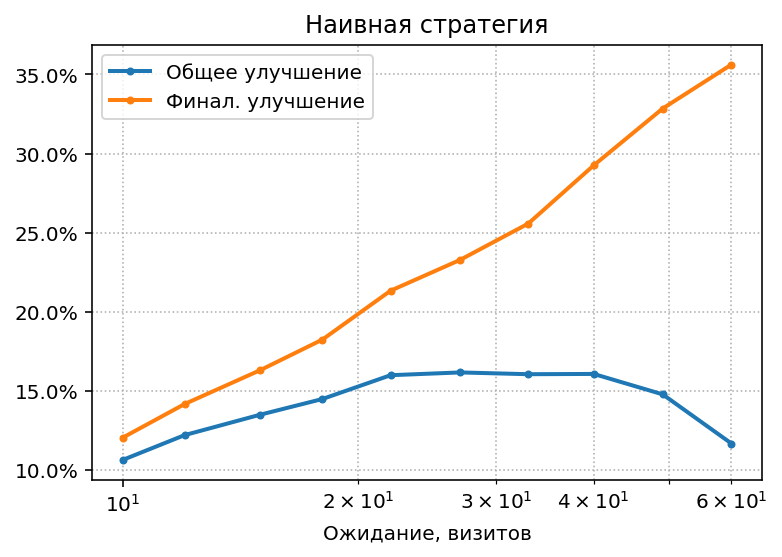
Видно, что при любых $M$ улучшение не поднимается выше 17%. Если
ждать недолго, то не успеем накопить достоверную информацию о конверсионности,
а если ждать дольше, то неэффективные источники отключатся только
в конце рекламной кампании. Естественно, при длительном ожидании финальное
улучшение будет высоким, но для всей рекламной кампании
важно именно общее улучшение.
Посмотрим на динамику конверсионности и
распределение улучшений при оптимальном $M=38$:
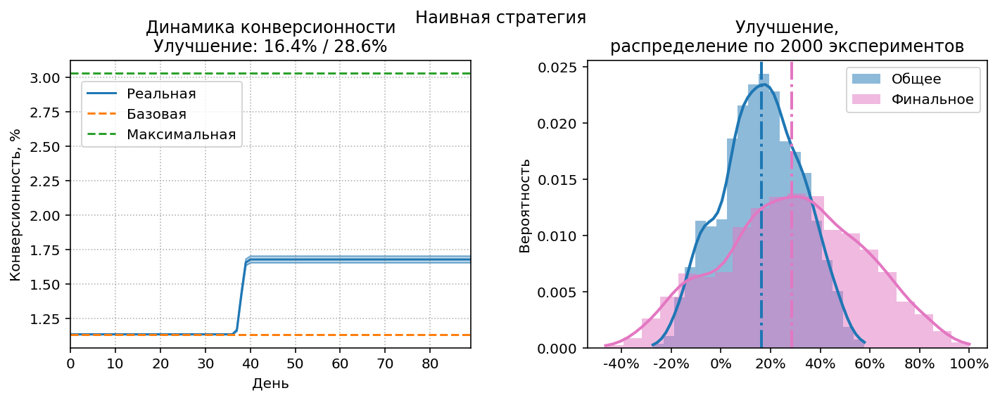
На левой диаграмме пунктирными линиями представлены baseline и максимальная
возможная конверсионность. График реальной конверсионности, являющийся результатом
работы стратегии – голубая линия с верхней и нижней границами, соответствующими доверительному интервалу 95%.
Общее улучшение соответствует
площади под этим графиком по отношению ко всей площади между зеленой
и оранжевой пунктирными линиями. Общее/финальное улучшения отображены
в заголовке диаграммы.
На правой диаграмме видно, что в части экспериментов улучшение было отрицательным, т.е. ожидания
в 38 дней явно недостаточно для получения достоверной информации о конверсионности.
Многорукие бандиты
Проблему, которую решают наши стратегии, можно сформулировать так:
Найти баланс между а) исследованием конверсионности источников (exploration),
и б) использованием найденной конверсионности для оптимизации (exploitation), таким образом,
чтобы максимизировать выигрыш (в нашем случае количество конверсий).
Эта проблема известна в более широком смысле, как проблема
многорукого бандита ( multi-armed bandit, MAB). Представим набор
игральных автоматов (слот-машин, также называемых однорукими бандитами), каждый из которых генерирует единичный выигрыш
с вероятностью $\theta_i$, неизвестной игроку. Задача игрока – за конечное время получить
максимальный выигрыш, т.е. поиграв на каждом бандите,
приблизительно определить его $\theta_i$ (exploration phase), и по результатам играть только на
“прибыльных” бандитах (exploitation phase).
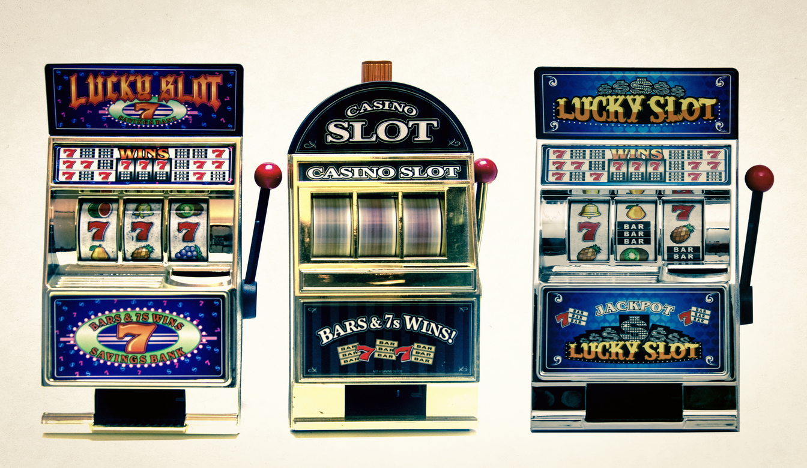
В классической постановке MAB-проблемы игрок за один шаг взаимодействует (arm pull)
только с одним бандитом, и на основе полученного результата принимает решение
о выборе бандита для следующего шага. Такая постановка хороша для проведения
A/B тестов, но совершенно не подходит для управления источниками: представьте, если бы
мы запускали трафик на сайт по одному посетителю, и на основе того, сконвертировался
он или нет, решали, из какого источника должен придти следующий посетитель. Выглядит
малореалистично, не так ли?
В нашем случае:
Игрок не имеет прямого контроля над тем, какой конкретный бандит
будет использоваться на каждом шаге, он может управлять только вероятностью игры на
каждом бандите (вероятности это веса источников $w_i$).
В каждом раунде происходит множество игр, в MAB терминологии это называется
*batch arm pulls*[1]. Текущая “прибыльность” бандитов вычисляется после окончания всего раунда.
В нашем случае один раунд это один день.
Вообще MAB-стратегии очень хорошо изучены, но именно в классическом варианте
проблемы. Проблему в нашей постановке, как это ни удивительно, практически никто не исследовал.
Но ничто не мешает восполнить этот пробел и провести исследования самостоятельно.
Мы адаптируем несколько известных MAB-стратегий к нашей задаче и посмотрим на результаты.
SuccessiveHalving
Очень простая стратегия, не требующая сложных вычислений, и отлично подходящая для “ручного” применения.
Впервые описана в [2] под названием SequentalHalving.
Алгоритм:
Так же как и в наивной стратегии, выбираем порог ожидания $M$ визитов
Когда порог достигнут, отключаем половину источников, которые показали
худшую конверсию, и удваиваем порог.
Повторяем шаг 2 до тех пор, пока не останется минимально возможное
количество источников (в нашем случае 3 или 4)
Смысл стратегии в том, что по мере отключения явно плохих источников, у нас остаётся
больше ресурсов, чтобы исследовать потенциально хорошие источники.
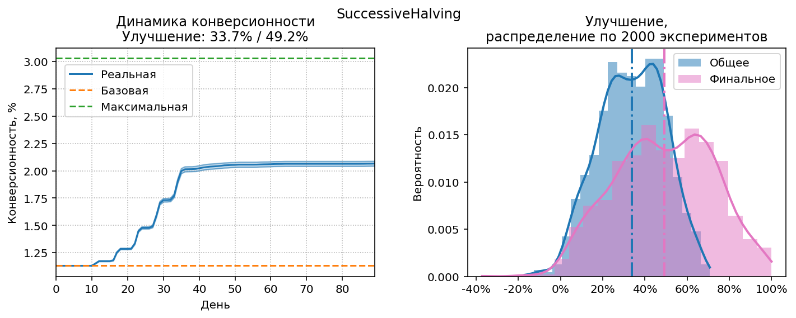
Результаты SuccessiveHalving при оптимальном $M=11$.
SuccessiveHalving демонстрирует результат примерно в два раза лучше по сравнению с наивной стратегией
(улучшение 33.7% против 16.4%). Ухудшение вместо улучшения теперь
почти не происходит, а финальное улучшение в отдельных случаях достигает 100%,
т.е. стратегии удаётся выйти на оптимальный набор источников.
Ступеньки на графике конверсионности образуются
после каждого “уполовинивания” источников.
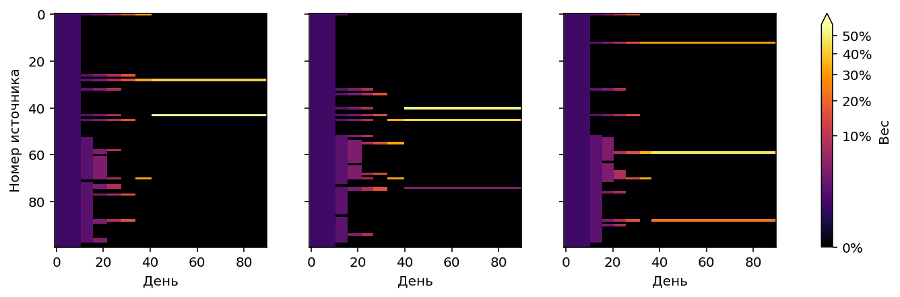
Для этой и следующих стратегий будем визуализировать также динамику
изменения весов источников во времени, для трёх случайно выбранных экспериментов.
Видно, что сначала веса распределены поровну (exploration phase), затем
плохие источники постепенно отключаются, и их вес переходит к
перспективным источникам. В районе 40-го дня отключаются все плохие
источники, и происходит переход к чистому exploitation.
$\varepsilon$-decreasing
Основная идея $\varepsilon$-стратегий это явное разделение ресурсов, отводимых
на exploration и exploitation. Выбирается число $0<\varepsilon<1$, на exploration
отводится доля ресурсов, равная $\varepsilon$, а на exploitation доля $1-\varepsilon$.
Наивная стратегия тоже является $\varepsilon$-стратегией, в терминологии MAB
она называется $\varepsilon$-first, т.к. сначала происходит 100% exploration (до момента
времени $t_M$, когда накопится $M$ визитов),
а затем 100% exploitation (до последнего дня $T$):
$$\varepsilon=\frac{t_M}{T}$$
Exploration и exploitation могут быть совмещены во времени, т.е.
доля трафика $1-\varepsilon$ отводится “хорошим” источникам, а остальной трафик
распределяется между всеми другими – такая стратегия будет называться $\varepsilon$-greedy.
Более оптимальны $\varepsilon$-decreasing стратегии[3],[4],
в которых $\varepsilon$ изменяется во времени:
сначала больше ресурсов отводится на exploration, но постепенно $\varepsilon$ уменьшается почти до нуля:
$$\varepsilon= \min\left(1, \frac{\varepsilon_0}{t}\right), \; t \in 1,\dotsc,T$$
где $\varepsilon_0$ это базовое значение $\varepsilon$ (может быть больше единицы).
Для нашей модели оптимум $\varepsilon_0=3.5$:
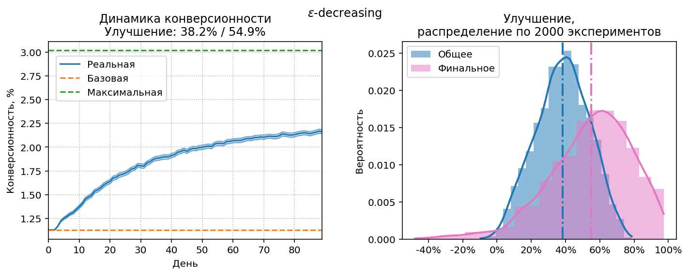
Результаты заметно улучшились по сравнению с SuccessiveHalving (38.2% против 33.7%).
Это связано с тем, что $\varepsilon$-decreasing стратегия начинает exploitation уже на третий день и изменяет
веса источников ежедневно, а не скачками.
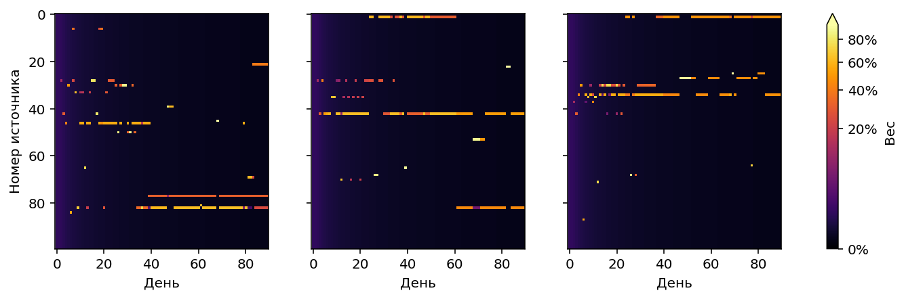
На диаграммах с весами заметно характерное поведение: веса “фоновых”
источников плавно уменьшаются (градиент от фиолетового к чёрному),
в то же время стратегия пытается выявить лучшие источники, активно
переключаясь между кандидатами в течение первого месяца.
Softmax
В предыдущих стратегиях трафик распределялся поровну между лучшими источниками
(а также между активными “худшими”). Но почему бы распределять
трафик не поровну, а в соответствии с “качеством” источника, т.е.
его конверсионностью? Эту идею воплощает softmax стратегия:
$$w_i=\frac{e^{r_i/\tau}}{\sum_i e^{r_i/\tau}}$$
где $r_i$ это наблюдаемая конверсионность источника, $w_i$ – вес источника.
Правая часть формулы представляет собой softmax-функцию,
аналогичную распределению
Гиббса-Больцмана,
поэтому компонент $\tau$ называют температурой. Конечно, никакого отношения
к статистической физике это стратегия не имеет, использование softmax функции это просто удобный
эмпирический способ выразить концепцию “источник получает долю трафика, соответствующую его качеству”.
Идея такого использования softmax предложена в [5],
softmax-стратегия в применении к MAB проблемам проанализирована в [3].
“Температура” обычно принимается обратно пропорциональной времени:
$$\tau=\frac{\tau_0}{t}$$
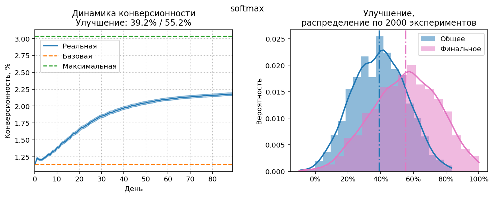
Результаты softmax стратегии лучше, чем $\varepsilon$-decreasing (39.2% против 38.2%),
т.е. неравномерное распределение весов это работоспособная идея.
Видно, что стратегия пытается начинать активный exploration с первого же дня,
но часто принимает ошибочные решения и в следующие дни конверсия немного падает.
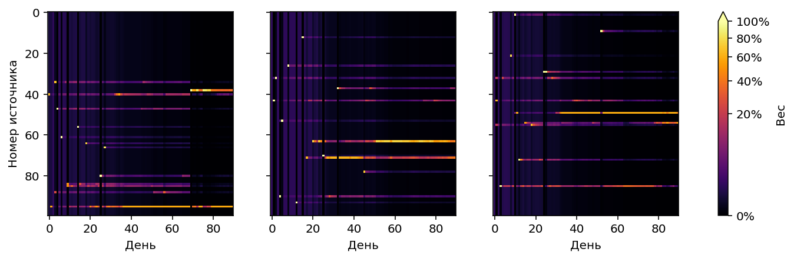
Стратегия очень оптимистична по поводу новых кандидатов: при появлении
нового “фаворита” почти весь вес сразу переносится на него,
но в следующие дни оптимизм уменьшается.
Байесовские стратегии
Всем стратегиям, которые мы уже протестировали, присущ один
недостаток: они сравнивают источники друг с другом только по их наблюдаемой
конверсионности. Такое сравнение предполагает, что наблюдаемая конверсионность содержит
одинаковое количество информации для всех источников, т.е. они стартуют в один и тот
же момент времени, выдают сопоставимое количество трафика, и рекламная
кампания завершается одномоментно, в заранее известный день.
В самом деле, нет смысла сравнивать конверсионность источника, который только
что стартовал (она скорее всего будет нулевой) с конверсионностью источника,
через который прошло уже несколько тысяч визитов – такое сравнение сразу
забракует “молодой” источник и стратегия будет работать неправильно.
Но условие “одновременный старт, сопоставимый трафик, одновременное завершение” далеко не всегда
выполнимо. Рекламные кампании могут включать в себя “старые” источники,
к ним в любой момент могут быть добавлены новые. Также постоянно происходит
ротация источников, неэффективные выводятся из кампании, вместо них добавляются свежие.
Момент завершения рекламной кампании малопредсказуем и зависит от её успешности, финансовых возможностей рекламодателя,
текущих цен на платный трафик, и т.д. Поэтому уже рассмотренные стратегии
будут хорошо работать только в тщательно контролируемых условиях. Для промышленного
применения нужны anytime-стратегии, способные адекватно учитывать уже накопленную
в источниках информацию и стартовать в любой момент, не привязываясь ко времени.
Очевидно, вместо наблюдаемой конверсионности такие стратегии должны
использовать количество визитов и количество конверсий.
И тут мы возвращаемся к байесовским методам работы с конверсией, описанным
в предыдущей статье.
Credible Bounds Racing
Вернёмся немного назад и вспомним картинку, на которой у источников есть
“усы”. Каждый ус обозначает верхнюю и нижнюю границы credible interval,
например для интервала 90% нижняя граница интерпретируется как
“вероятность 5%, что конверсионность будет меньше этой границы”,
верхняя соответственно “вероятность 5%, что конверсионность окажется больше”.
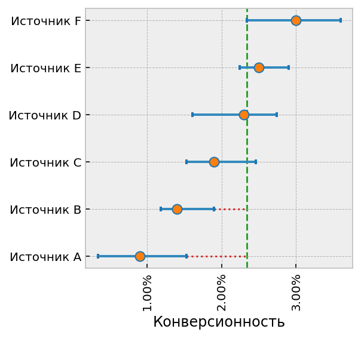
Эти границы – всё, что нужно для работы простейшей байесовской стратегии. Алгоритм:
Смотрим, есть ли источники, у которых верхняя граница интервала меньше, чем
нижняя граница любого другого источника (т.е. “усы” не перекрываются). На приведённой
выше диаграмме это источники A и B.
Если такие источники-аутсайдеры есть, значит они явно хуже одного из существующих источников, и их можно отключить.
На следующий день повторяем всё с пункта 1. Если по новым данным
видно, что источник был отключен зря (т.е. его верхняя граница
опять перекрывается со всеми остальными), включаем его обратно.
При такой стратегии в конце концов останется один источник, у которого не
хватит трафика на весь сайт. Поэтому вводится дополнительное условие на
отключение: отключаемый источник не должен входить в топ “самых перспективных”.
Топ рассчитывается так: сортируем источники по верхней границе credible interval
(т.е. какую конверсионность они могут показать), и отбираем их в топ, начиная от самого
перспективного, пока не наберется общий максимальный вес больше единицы, т.е. пока топ не будет
способен сформировать весь трафик для сайта.
Такой же алгоритм используется при ручном управлении источниками
на основе диаграммы с “усами”. Собственно, приведённое описание алгоритма это всего
лишь формализация методики ручного управления.
Осталось только понять, какой должна быть оптимальная ширина credible interval, т.к.
при традиционной ширине 90% все “усы” будут перекрываться до последнего дня
рекламной кампании – у нас слишком мало визитов. Выясним оптимум экспериментальным путём:
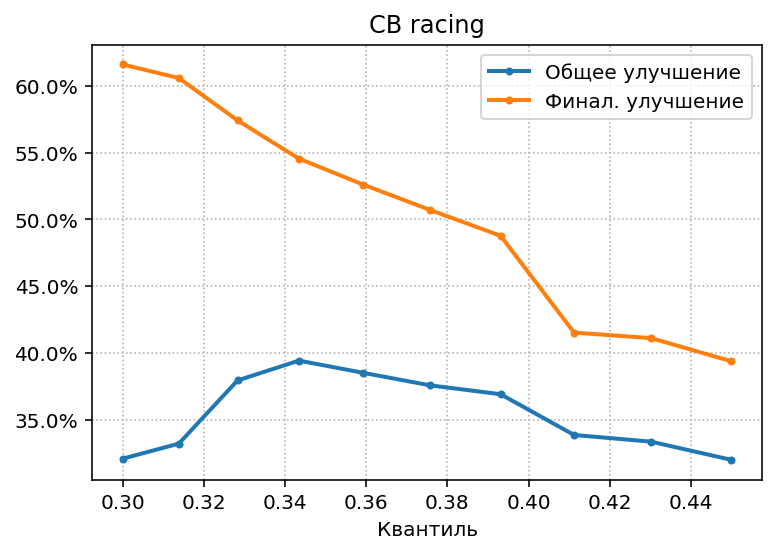
Оптимальный квантиль 0.34, что соответствует ширине интервала всего 32%.
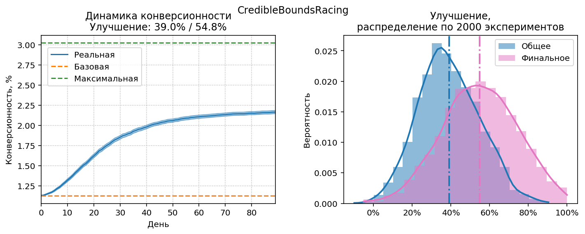
Результат стратегии чуть хуже (на 0.2%), чем у предыдущего чемпиона (softmax).
Но при этом, как уже говорилось, эта стратегия более применима
для управления реальными источниками.
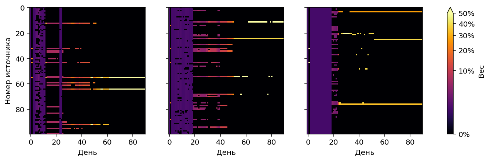
Видно, что стратегия пытается отобрать оптимальные источники уже на второй день,
но потом понимает, что поторопилась, и продолжает exploration. Если сделать
ширину credible interval немного больше, эти артефакты исчезнут.
Посмотрим, каких результатов можно добиться (и при какой ширине правдоподобного интервала)
в других ситуациях:
Более продолжительная рекламная кампания.
Больший объем трафика.
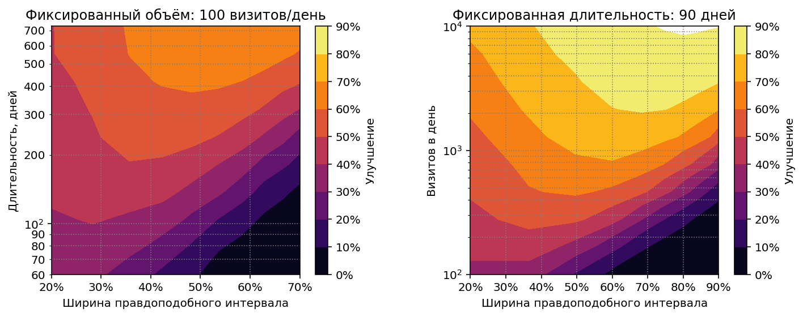
Получились похожие диаграммы. Если пересчитать продолжительность
рекламной кампании на левой диаграмме в эффективное количество визитов
на источник за всё время кампании, получим копию правой диаграммы. Т.е.
результаты стратегии и оптимальный credible interval зависят
только от среднего количества визитов на источник. Если это количество
увеличить до 900 (90 дней x 1000 визитов в день / 100 источников),
можно получить улучшение >70%,
а при увеличении до 9000 улучшение превышает 90%, т.е. близко
к максимально возможной эффективности.
Probability matching
Если у нас есть все апостериорные распределения, почему бы не
ответить напрямую на вопрос, который нас на самом деле интересует? Нет, не о смысле
жизни, а более простой:
Какова вероятность того, что $i$-ый источник имеет латентную конверсионность выше, чем все остальные?
Если мы знаем эту вероятность, то логично установить веса источников
пропорциональными ей, и это будет оптимальным решением нашей задачи!
В самом деле, если вероятность нулевая, то источнику
надо дать нулевой вес, если вероятность 100%, то весь вес надо перенести
на этот лучший источник, если вероятности для двух источников 50:50,
надо дать им одинаковые веса по 50% трафика, и т.п. Сопоставление
вероятности оптимальности каждой “руке бандита” или в нашем случае источнику,
называется Probability Matching.[6]
$$w_i=\Pr(\theta_i=\max\{\theta_1,\dotsc,\theta_N\})$$
где $\theta_i$ это латентная конверсионность $i$-го источника. Это выражение
можно представить, как матожидание индикаторной функции:
$$\mathbb{I}_i(\theta)=\begin{cases}
1 &\text{if } \theta_i=\max\{\theta_1,\dotsc,\theta_N\}, \\
0 &\text{otherwise }
\end{cases}$$
$$w_i=\mathrm{E}\left(\mathbb{I}_i(\theta)\right)=\int \mathbb{I}_i(\theta)p(\theta)\mathrm{d}\theta$$
Апостериорное распределение переменной $\theta$ мы вычисляем через
сопряжённое бета распределение:
$$p(\theta_i)=\mathrm{Be}(\theta_i|\alpha_i,\beta_i) \\
\alpha_i=\alpha_{prior} + S_i \\
\beta_i=\beta_{prior} + N_i - S_i$$
где $S_i$ это количество наблюдаемых успехов (конверсий), $N_i$ - количество
наблюдений, т.е. визитов у $i$-го источника.
Вероятность того, что значение $\theta_j$ окажется меньше $\theta_i$, задаётся
через кумулятивную функцию бета распределения:
$$\Pr(\theta_j < \theta_i) = \mathrm{Be_{CDF}}(\theta_i|\alpha_j,\beta_j)$$
Скомбинировав всё вместе, получаем:
$$w_i=\int_0^1 \mathrm{Be}(\theta_i|\alpha_i,\beta_i)\prod_{i \ne j} \mathrm{Be_{CDF}}(\theta_i|\alpha_j,\beta_j) \mathrm{d}\theta_i$$
Интеграл легко рассчитывается числовыми методами:
import numpy as np
from scipy.stats import beta
from scipy.integrate import quad
def opt_prob(α, β):
def integrand(θ, i):
logp = beta.logpdf(θ, α[i], β[i])
logcdf = beta.logcdf(θ, α, β)
logcdf[i] = 0
return np.exp(logcdf.sum() + logp)
return [quad(lambda θ: integrand(θ, i), 0, 1)[0] for i in range(len(α))]
Числовое интегрирование работает достаточно медленно, альтернативный и более универсальный способ
расчёта это сэмплирование из апостериорного распределения. Согласно
закону больших чисел, при большом количестве сэмплов среднее значение
выборки сойдется к матожиданию:
$$w_i=\lim\limits_{M \to \infty}\frac{1}{M} \sum_{m=1}^M \mathbb{I}_i(\theta_m) $$
Т.е. надо взять $M$ сэмплов, и для каждого источника вычислить,
в каком проценте сэмплов его значение конверсионности оказалось максимальным.
На практике достаточно 1K–8K сэмплов, для ускорения можно проводить
сэмплирование и часть расчёта на GPU.
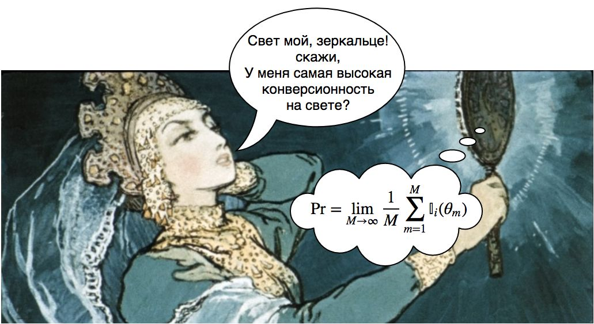
Расчет через сэмплирование для классической MAB-задачи (когда не нужны
веса, а надо просто выбрать следующего бандита) известен, как
Thompson sampling.[7]
В этом случае достаточно единственного сэмпла,
и для следующего шага выбирается бандит, у которого в сэмпле оказалось максимальное значение вероятности.
Thompson sampling был предложен ещё в 1933 году, но тогда вычисления были
слишком дорогими, метод был забыт, и о нём вспомнили только в конце XX века.
Доказательство его оптимальности было получено в 1997 году.
Probability matching – оптимальная стратегия, всегда сходящаяся к выбору
лучших источников. Это схождение происходит достаточно быстро по меркам MAB-стратегий,
но слишком медленно для нас: probability matching не сделает
нулевым вес источника, пока не убедится в том, что он абсолютно безнадёжен.
Но чтобы убедиться в этом, требуется гораздо больше визитов, чем
имеющиеся у нас 90 на источник.
Вместо выбора гарантированно лучших источников
в отдалённом будущем, нам нужен возможно не самый оптимальный выбор
просто хороших источников в течение первых недель работы стратегии. Чтобы
сдвинуть баланс в сторону exploitation, добавим новый параметр $\rho$,
который будем называть жадностью:
$$w’_i = w_i^\rho, \; \rho \geq 1 $$
где $w’_i$ – эффективный вес $i$-го источника, который будет использовать
стратегия, $w_i$ – теоретически оптимальный вес, рассчитанный через
probability matching, $\rho$ – степень, в которую возводится теоретический
вес. Чем больше $\rho$, тем больше ресурсов переходит к уже известным “хорошим” источникам
и меньше ресурсов остаётся на exploration. Оптимальная жадность для
стандартных условий эксперимента: $\rho\approx7$. Посмотрим на результаты:
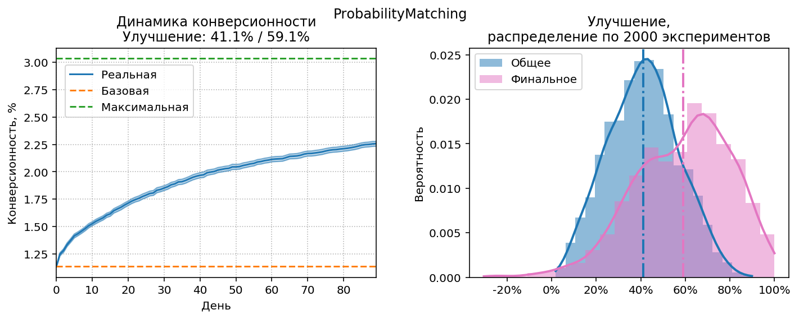
У нас новый чемпион! Улучшение 41.1% это почти на 2 единицы
больше, чем предыдущий рекорд 39.2%. Probability matching
действительно оптимальная стратегия.
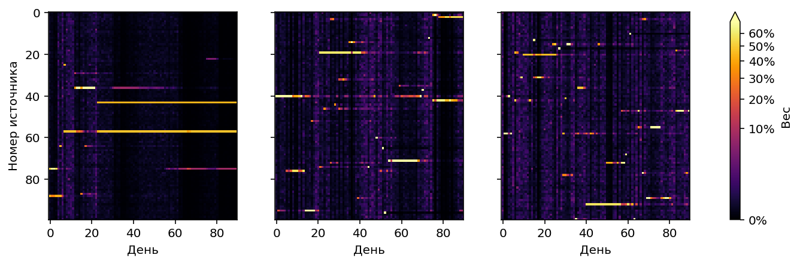
Если стратегия не уверена в своём выборе, она не прекращает exploration
до самого последнего момента, в надежде добраться до истины. Если
выбор очевиден (попались явно хорошие источники), вес переходит к ним.
Exploration выглядит несколько хаотичным из за шума, вносимого
случайным сэмплированием, но на результаты этот шум не влияет.
Посмотрим, какие результаты покажет probability matching на других
объемах визитов:
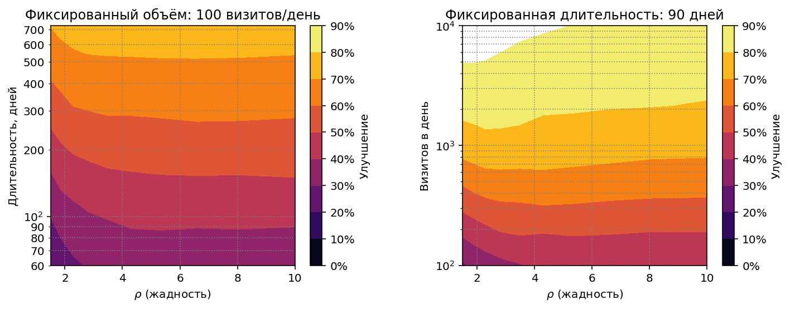
Результаты превосходны. Улучшение >80% достигается сразу после
планки в 1000 визитов (т.е. 10 визитов в день на источник), а после
5000 визитов доступно улучшение >90%!
Ещё очень важная деталь: эффективность стратегии слабо зависит от
выбора гиперпараметра $\rho$. В принципе на всём диапазоне протестированных
объемов одинаковое значение $\rho=3$ показало бы неплохие результаты.
Для сравнения можно посмотреть на аналогичные диаграммы для Credible
Bounds Racing: там правильный выбор ширины интервала играет решающую роль.
Неточное априорное распределение
Кроме $\rho$ есть еще один неявный гиперпараметр – априорное распределение конверсионностей.
Для тестирования стратегий я просто сгенерировал выборку 100 сэмплов из
используемого моделью логнормального
распределения и с помощью MLE вычислил параметры
соответствующего бета распределения. Понятно, что в реальной жизни
сэмплы из распределения латентных конверсионностей взять негде, разве что
попросить их у Господа, поэтому придётся использовать наблюдаемую
конверсионность, что негативно скажется на точности. Как неточное
определение параметров априорного распределения повлияет на результат? Давайте проверим.
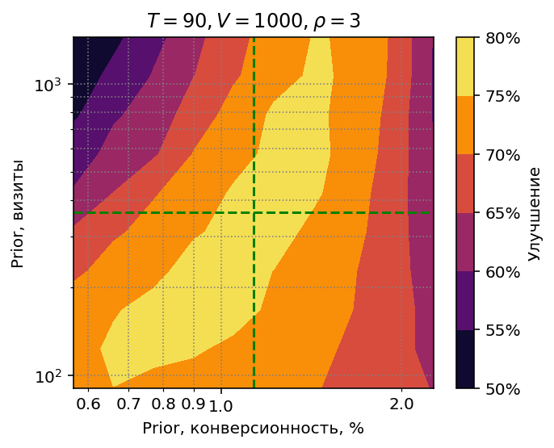
Для практических расчётов бета распределение удобно параметризовать не через $\alpha$
и $\beta$, а через конверсионность $r$ (играет роль матожидания)
и эффективное количество визитов $v$ (играет роль дисперсии):
$$\alpha = rv \\
\beta = (1-r)v$$
“Правильные” значения $\hat{r}$ и $\hat{v}$, полученные через MLE, отображены
на диаграмме зелёным пунктиром. Точка пересечения пунктирных линий –
параметры априорного распределения, которые использовались во всех предыдущих экспериментах.
Чтобы определить устойчивость стратегии к ошибкам в априорном распределении,
я провёл расчёты в диапазоне конверсионностей $[0.5\hat{r}, 2\hat{r}]$ и диапазоне
количества визитов $[\hat{v}/3,3\hat{v}]$, при объеме 1000 визитов в день.
На диаграмме видно, что стратегия не чувствительна к ошибкам
в эффективном количестве визитов, область оптимальных результатов
простирается от $v=100$ до $v=1100$. Ошибки в конверсионности более критичны.
На практике затруднения обычно вызывает как раз определение правильного
$v$, а промахнуться в два раза мимо конверсионности довольно сложно. При определении
$v$ лучше ошибиться в сторону меньшего количества визитов (т.е. большей дисперсии):
видно, что область оптимальных результатов расширяется к низу.
Применимость для других распределений конверсионности
Посмотрим, как ведёт себя
probability matching при использовании распределений конверсионностей, отличных
от распределения по умолчанию (матожидание конверсии $1.13\%$, $\sigma=0.5$).
Возьмем диапазон средней конверсии от 0.2% до 5% и стандартного отклонения 0.25–1.5.
Примеры таких распределений приведены ниже:
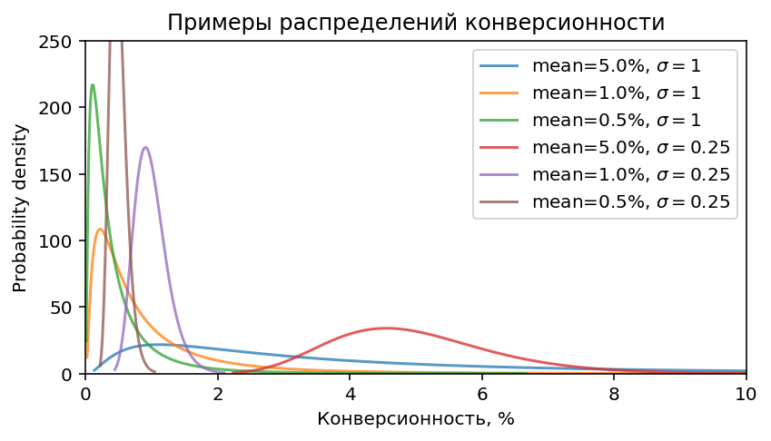
Стратегия работоспособна во всём диапазоне, но результаты, естественно,
различаются:
С увеличением средней конверсионности эффективность стратегии растёт,
т.к. появляется больше информации о конверсиях. При увеличении дисперсии
эффективность также растёт, так как увеличивается различие между
“плохими” и “хорошими” источниками. Чем больше это различие, тем
раньше можно его выявить, и тем лучше результат. При благоприятных
условиях (высокая конверсионность + высокая дисперсия) стратегия
достигает улучшения >80% (напомню, это результат для 100 визитов в день,
т.е. в среднем один (!) визит на источник). Если стратегия работает с
объемом 1000 визитов в день, результат ещё лучше:
Белая область на диаграмме – это улучшение >90%.
Нестационарная конверсионность
Во всех предыдущих экспериментах мы исходили из того, что латентная
конверсионность источников, единожды заданная на старте, не меняется в ходе эксперимента.
В реальной жизни этого никто не может обещать. Более того, стабильная
конверсионность источников будет скорее исключением, чем правилом. Сможет ли
probability matching справиться с этим?
Смоделируем нестационарность как геометрическое случайное блуждание латентной конверсионности
c Гауссовскими приращениями и возвратом к среднему:
$$\theta’_0 = \ln(\theta_0) \\
\mu_t = \eta(\theta’_0 - \theta’_t) \\
\theta’_{t+1} = \theta’_t + \mathcal{N}(\mu_t, \sigma^2) \\
\theta_{t+1} = \exp(\theta’_{t+1}) $$
где $\theta_0$ – начальная конверсионность, $\eta$ – скорость возврата
к среднему, $\sigma$ – волатильность.
Изменение конверсионности
в ходе эксперимента может выглядеть например так:
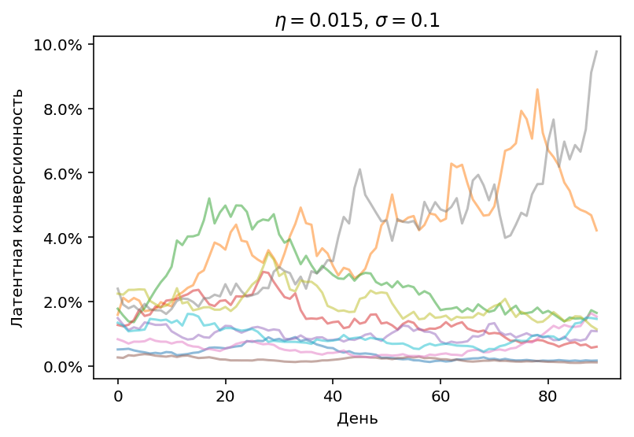
Чтобы стратегия могла адаптироваться к нестационарности, научим её
“забывать” прошлое. Обычно суммарное количество конверсий к моменту
времени $t$ получается сложением конверсий за все предыдущие дни:
$$c_t = \sum_{i=1}^t c’_i$$
где $c’_i$ это количество конверсий в день $i$. Теперь модифицируем суммирование,
и будем домножать каждое предыдущее кол-во конверсий на коэффициент затухания, $\gamma$:
$$c_t = \gamma c_{t-1} + c’_t, \; \gamma \leq 1 $$
Таким образом на момент времени $t$ от конверсий первого дня
останется часть, пропорциональная $\gamma^t$. Стратегия забудет часть
отдалённого прошлого. Такая же операция проделывается с визитами, в результате
на выходе получим эффективное количество визитов и конверсий, которое будет
меньше, чем просто сумма.
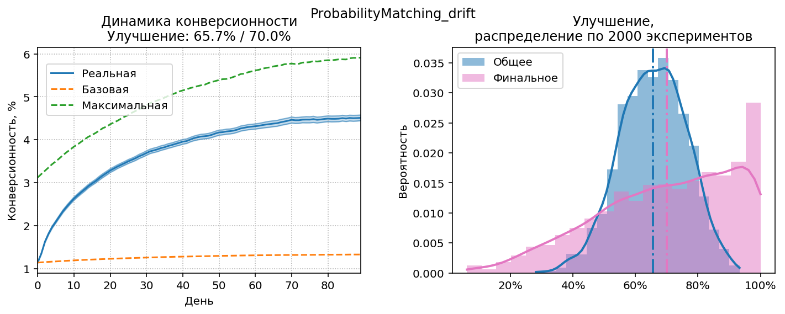
Результаты работы probability matching c $\gamma=0.8$, $\rho=2.1$, $N=1000$ (количество визитов в день увеличено, чтобы у стратегии оставались ресурсы на exploration).
Максимальная конверсионность (зелёный пунктир) постепенно увеличивается,
потому что используются относительные приращения конверсионности,
и для смещения вверх есть больше места, чем для
смещения вниз (снизу конверсионность ограничена нулём). Видно, что график
реальной конверсионности почти успевает за графиком максимальной, т.е.
стратегия видит изменения и адаптируется к ним. Также помогает
относительно небольшое $\rho$, стимулирующее exploration.
Для сравнения: получено улучшение 65.7%, улучшение при работе без затухания ($\gamma=1$)
составит 59%, улучшение при тех же условиях в стационарном режиме
(т.е. с неизменной конверсией) – около 75%.
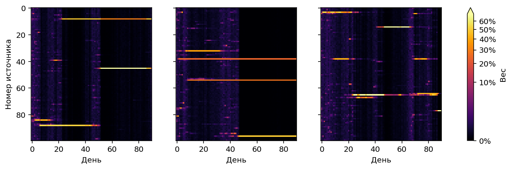
На диаграмме весов видно, что стратегия регулярно переключается
между режимами exploration и exploitation, т.к. конверсионность
источников постепенно изменяется.
Итоги
Если пересчитать результаты работы стратегий в прирост количества конверсий
на сайте, Probability Matching даcт прирост около 33% относительно
оптимизированной наивной стратегии,
CB Racing соответственно немного меньше. Учитывая, что в реальной
жизни источниками часто управляют хаотично и качество такого управления
не дотягивает даже до наивной стратегии, прирост может быть ещё выше.
У байесовских стратегий хорошие перспективы применения, учитывая то,
что они не обязаны непосредственно управлять источниками. Вычисленное
с помощью probability matching оптимальное количество трафика
для источников можно отображать
в отчётах просто в качестве подсказки “как лучше распределить трафик”.
Ну а CB Racing это не только стратегия, но и инструкция по использованию
“усов” – правдоподобных интервалов конверсионности.
Probability matching устойчив к ошибкам в подборе гиперпараметров, это тоже важно для практического применения.
Я протестировал
эту стратегию во всех режимах, со всеми возможными ошибками, на которые хватило фантазии,
и ни в одном их них не было серьезных сбоев.
Probability matching также легко расширяется для использования дополнительной
контекстной информации. В реальной жизни нам известно об источниках и о трафике,
который из них приходит, гораздо больше, чем просто количество конверсий.
Тип источника, рекламная система, поведение посетителей из источника на сайте,
просмотренные страницы, продолжительность визита, и т.д. – всю эту
информацию можно и нужно использовать для повышения точности прогноза.
Возможности здесь практически безграничны, т.к. можно сэмплировать
конверсионность не только из аналитически заданных распределений, но
и из моделей машинного обучения, включая многослойные нейросети[8].
Естественно, область применения не ограничивается сайтами:
реклама мобильных приложений, игровая реклама, call tracking – стратегии
могут использоваться везде, где существует выбор между несколькими альтернативными
источниками пользователей/клиентов.
Чтобы не переусложнять модель и не загромождать текст подробностями,
были сделаны некоторые допущения:
Не учитывается сезонность, т.е. колебания объема трафика и конверсионности между
рабочими и выходными днями.
Стоимость трафика у всех источников принимается одинаковой. В реальной
жизни для коммерческих источников надо было бы учитывать не кол-во
конверсий на единицу трафика (конверсионность), а кол-во конверсий на
единицу потраченных средств (стоимость конверсии), или прибыль на единицу затрат (ROI).
Не учитываются отложенные конверсии, т.е. предполагается, что
конверсия совершается в течение суток, между обновлениями весов источников. Для сайтов
с “медленной” конверсией надо вводить поправки к наблюдаемому
числу конверсий.
Поддерживаются только модели атрибуции, сопоставляющие
конверсию с единственным источником (т.е. по первому или последнему переходу)
Источники
Top arm identification in multi-armed bandits with batch arm pulls.^
K. Jun,
K. Jamieson,
R. Nowak,
X. Zhu,
2016.
AISTATS.
(pp. 139-148)
Almost optimal exploration in multi-armed bandits^
Z. Karnin,
T. Koren,
O. Somekh,
2013.
ICML.
(pp. 1238-1246)
Finite-time regret bounds for the multiarmed bandit problem.^
N. Cesa-Bianchi,
P. Fischer,
1998.
ICML.
(pp. 100-108)
Finite-time analysis of the multiarmed bandit problem^
P. Auer,
N. Cesa-Bianchi,
P. Fischer,
2002.
Machine learning.
47.2-3 (pp. 235-256)
Individual choice behavior: A theoretical analysis^